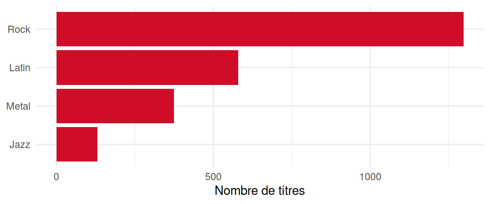

eCH-1234 – Modèle de document Quarto
Résumé
Bref résumé de l’objectif de ce document
Remarque
Dans le présent document, les désignations de personnes sont formulées de manière épicène (neutre du point de vue du genre). Le guide de la Chancellerie fédérale sert de base. Selon la situation, on utilise des formulations paires (citoyennes et citoyens), des formes abstraites (personne assurée), des formes neutres ou des périphrases sans référence à la personne. L’usage du masculin générique n’est pas autorisé. Les formes complètes sont employées dans le texte continu, c’est-à-dire dans les textes composés de phrases rédigées. Dans les passages de texte raccourcis, notamment dans les tableaux, des formes abrégées peuvent être utilisées. La forme abrégée s’utilise alors avec une barre oblique, mais sans trait d’omission (rapporteur/euse). L’astérisque de genre et les typographies similaires ne sont pas utilisés.
1 Introduction
1.1 Statut
En cours: L’utilisation est autorisée uniquement au sein du groupe spécialisé et/ou du Comité des experts.
1.2 Champ d’application
Les informations de ce chapitre doivent donner au lecteur un aperçu rapide de ce à quoi ce standard est destiné. Des indications sur les éléments suivants peuvent s’avérer utiles.
1.3 Nous pouvons avoir des sous-titres
Et écrire un peu de texte.
1.3.1 Et aussi des sous-sous-titres
Et écrire encore plus de texte. Peut-être même avec une belle image.

Lors de la présentation de diagrammes, essayez de les créer directement dans Mermaid JS ; cela facilite grandement les modifications futures ou les traductions.
1.4 Mises en forme
Ce chapitre est un test de charge: il contient les éléments Markdown et Quarto courants, afin de vérifier leur rendu dans le PDF et sur le site web.
1.4.1 Mise en évidence du texte
Le texte peut être en gras, en italique, souligné, surligné, en petites capitales ou barré. Les raccourcis clavier comme Ctrl-CCtrl-C + Ctrl-VCtrl-V et le code en ligne comme schema:name sont mis en évidence.1
1 Sur le site web, les notes de bas de page apparaissent dans la marge de droite; dans le PDF, en bas de page.
1.4.1.1 Un titre de quatrième niveau
Les titres jusqu’au quatrième niveau sont possibles; ils sont numérotés, mais n’apparaissent pas dans la table des matières.2
2 Une seconde note de bas de page avec un lien vers ech.ch.
1.4.2 Listes et encadrés
Liste non ordonnée:
- Premier point
- Deuxième point
- Sous-point
- Troisième point
Liste ordonnée:
- Première étape
- Deuxième étape
- Troisième étape
Note
Une remarque attire l’attention sur des liens faciles à négliger.
Avertissement
Un avertissement signale des sources d’erreur, par exemple des données d’entrée non vérifiées.
1.4.3 Code, tableaux et formules
Le bloc de code suivant montre une requête SPARQL:
Les figures peuvent aussi être produites avec du code R, comme le montre Figure 2:
| Colonne | Type | Remarque |
|---|---|---|
| Nom | Chaîne | Champ obligatoire |
| Quantité | Nombre décimal | avec unité |
Une formule peut figurer dans le texte, par exemple \(E = m c^2\), ou comme équation à part entière telle que Équation 1:
\[ \sum_{i=1}^{n} x_i = n \bar{x} \tag{1}\]
2 Indications d’utilisation
Le paragraphe suivant est volontairement absurde et ne sert qu’à tester le style de citation: selon le guide d’approbation [eCH-0003 11.1.0], toutes les adresses postales [eCH-0010 8.1.0] doivent être sérialisées en Turtle [Turtle], vérifiées comme catalogue DCAT [DCAT; eCH-0200 3.0.1] avec SHACL [SHACL] et publiées via SPARQL [SPARQL] comme Linked Open Data [eCH-0205 1.0] sur les cultures agricoles [eCH-0265 1.0.0] en JSON-LD [JSON-LD] et OWL [OWL 2], comme le prévoit le Web sémantique [Berners-Lee 2023].
2.1 Espaces de noms
Le Table 2 énumère les préfixes et les espaces de noms utilisés dans ce document. Un préfixe tient lieu d’une IRI d’espace de noms, le début commun des IRI d’un vocabulaire. La spécification Turtle décrit comment ces prefixed names sont résolus [Turtle].
| Préfixe | Espace de noms |
|---|---|
| : | https://agriculture.ld.admin.ch/eCH-1234/2/ |
| country: | https://ld.admin.ch/country/ |
| rdf: | http://www.w3.org/1999/02/22-rdf-syntax-ns# |
| schema: | http://schema.org/ |
| unit: | http://qudt.org/vocab/unit/ |
| xsd: | http://www.w3.org/2001/XMLSchema# |
3 Modèle de données
3.1 Adresse postale
L’adresse postale d’une personne.
Les adresses suivent la structure de schema.org et non la norme suisse d’adresse eCH-0010, car le jeu de données contient surtout des adresses étrangères. Les codes postaux ne sont donc vérifiés que quant à leur format plausible, et non par rapport à un répertoire.
3.1.1 Aperçu
- Shape
- :PostalAddressShape
- Classe cible
- schema:PostalAddress
- Fermée
- Oui (seules les propriétés énumérées sont admises)
- Chiffres clés
- 67 instances avec chacune 6 à 8 triplets (7.5 en moyenne)
- Accès aux données
- Service SPARQL
3.1.2 Propriétés
| Description | Détails | Cardinalité |
|---|---|---|
| Rue et numéro (schema:streetAddress) |
|
1..1 |
| Code postal (schema:postalCode): Lettres, chiffres, espaces et traits d’union, de deux à dix caractères. |
|
0..1 |
| Localité (schema:addressLocality): Chaque adresse requiert exactement une localité. |
|
1..1 |
| Région (schema:addressRegion): Canton, État ou province, lorsque c’est l’usage dans le pays. |
|
0..1 |
| Pays (schema:addressCountry): Pays sous forme d’IRI tirée de la liste des pays des Archives fédérales sur LINDAS (ISO 3166-1 alpha-3). |
|
1..1 |
3.2 Album de musique
Une collection de pistes dans le jeu de données Chinook.
3.2.1 Aperçu
- Shape
- :MusicAlbumShape
- Classe cible
- schema:MusicAlbum
- Fermée
- Non (d’autres propriétés sont admises)
- Chiffres clés
- 347 instances avec chacune 5 triplets
- Accès aux données
- Service SPARQL
3.2.2 Propriétés
| Description | Détails | Cardinalité |
|---|---|---|
| Nom (schema:name): Chaque album doit avoir un nom. |
|
1..1 |
| Artiste (schema:byArtist): Personne ou groupe de musique ayant créé l’album. |
|
0..* |
3.3 Enregistrement musical
Une piste musicale unique dans le jeu de données Chinook.
3.3.1 Aperçu
- Shape
- :TrackShape
- Classe cible
- schema:MusicRecording
- Fermée
- Non (d’autres propriétés sont admises)
- Chiffres clés
- 3503 instances avec chacune 10 à 15 triplets (11.1 en moyenne)
- Accès aux données
- Service SPARQL
3.3.2 Propriétés
| Description | Détails | Cardinalité |
|---|---|---|
| Nom (schema:name): Chaque piste doit avoir un nom. |
|
1..1 |
| Dans l’album (schema:inAlbum): Une piste ne peut appartenir qu’à un schema:MusicAlbum valide. |
|
0..* |
| Auteur (schema:author): La personne ou le groupe qui a écrit la piste. | 0..* | |
| Genre (schema:genre) |
|
1..1 |
| Durée (schema:duration): La durée doit être exprimée en tant que schema:QuantitativeValue. |
|
0..* |
| Taille du contenu (schema:contentSize) |
|
0..* |
3.4 Facture
Un reçu d’achat dans le jeu de données Chinook. Une facture regroupe les positions d’un achat. Le montant de la facture n’est pas seulement saisi comme valeur, il est aussi vérifié par rapport à la somme des positions; des écarts de plus de cinq centimes sont considérés comme des erreurs. Les factures antérieures à l’an 2000 proviennent d’un ancien système et ne sont pas admises dans ce jeu de données.
3.4.1 Aperçu
- Shape
- :InvoiceShape
- Classe cible
- schema:Invoice
- Fermée
- Non (d’autres propriétés sont admises)
- Chiffres clés
- 412 instances avec chacune 8 à 21 triplets (12.4 en moyenne)
- Accès aux données
- Service SPARQL
3.4.2 Propriétés
| Description | Détails | Cardinalité |
|---|---|---|
| Client (schema:customer): Une facture doit être liée à exactement un client. |
|
1..1 |
| Paiement total dû (schema:totalPaymentDue): Une facture doit définir un paiement total dû en tant que schema:QuantitativeValue. |
|
1..1 |
| Contient (schema:hasPart): Une facture doit avoir au moins un article (OrderItem). |
|
1..* |
| Date de création (schema:dateCreated) |
|
0..* |
3.4.3 Règles (SPARQL)
3.4.3.1 Date de la facture
Une facture ne peut pas être datée d’avant l’année 2000.
3.4.3.2 Total de la facture
Le total de la facture doit correspondre exactement à la somme de ses lignes (tolérance de 0.05).
SELECT $this
WHERE {
$this schema:totalPaymentDue/schema:value ?invoiceTotal .
{
SELECT $this (SUM(?price * ?qty) AS ?calculatedTotal)
WHERE {
$this schema:hasPart ?line .
?line schema:price/schema:value ?price .
?line schema:orderQuantity/schema:value ?qty .
}
GROUP BY $this
}
FILTER(ABS(?invoiceTotal - ?calculatedTotal) > 0.05)
}3.5 Genre
Une catégorie musicale dans le jeu de données Chinook.
3.5.1 Aperçu
- Shape
- :GenreShape
- Classe cible
- :Genre
- Fermée
- Oui (seules les propriétés énumérées sont admises)
- Chiffres clés
- 25 instances avec chacune 5 à 7 triplets (5.4 en moyenne)
- Accès aux données
- Service SPARQL
3.5.2 Propriétés
| Description | Détails | Cardinalité |
|---|---|---|
| Nom (schema:name) |
|
1..1 |
| Partie de (schema:partOf) |
|
0..* |
| Dénomination alternative (schema:alternateName): Dénomination traduite ou familière du genre, au plus une par langue. |
|
0..* |
3.5.3 Règles (SPARQL)
3.5.3.1 Pas de hiérarchie cyclique
Un genre ne peut pas faire partie de lui-même, ni directement ni transitivement.
3.6 Organisation
Une entreprise ou organisation dans le jeu de données Chinook.
3.6.1 Aperçu
- Shape
- :OrganisationShape
- Classe cible
- schema:Organisation
- Fermée
- Non (d’autres propriétés sont admises)
- Accès aux données
- Aucun (données transactionnelles, ne faisant pas partie du graphe publié)
3.6.2 Propriétés
| Description | Détails | Cardinalité |
|---|---|---|
| Nom (schema:name): Chaque organisation doit avoir un nom. |
|
1..1 |
3.7 Personne
Toute personne (employé, client ou personne personnalisée) présente dans le jeu de données.
Les personnes sont décrites de manière uniforme, quel que soit leur rôle: le personnel du magasin de musique, la clientèle et les personnes saisies manuellement partagent les mêmes propriétés. Le rôle découle des relations, par exemple schema:worksFor pour le personnel ou schema:customer sur une facture pour la clientèle.
Les noms sont saisis tels que la personne les utilise; les titres académiques ne font pas partie du prénom. Les adresses e-mail et les dates de naissance sont facultatives et les infractions aux règles ne sont signalées que comme avertissements.
3.7.1 Aperçu
- Shape
- :PersonShape
- Classe cible
- schema:Person
- Fermée
- Oui (seules les propriétés énumérées sont admises)
- Chiffres clés
- 383 instances avec chacune 5 à 10 triplets (5.6 en moyenne)
- Accès aux données
- Service SPARQL
3.7.2 Propriétés
| Description | Détails | Cardinalité |
|---|---|---|
| Prénom (schema:givenName): Chaque personne doit avoir un prénom. |
|
1..1 |
| Nom de famille (schema:familyName): Chaque personne doit avoir un nom de famille. |
|
1..1 |
| Adresse e-mail (schema:email): Si une adresse e-mail est fournie, elle doit respecter un format standard. |
|
0..* |
| Date de naissance (schema:birthDate): Une personne doit avoir une date de naissance valide. |
|
0..* |
| Adresse (schema:address) |
|
0..* |
| Travaille pour (schema:worksFor): Un employé peut relever d’une autre personne. |
|
0..* |
| Titre du poste (schema:jobTitle) |
|
0..1 |
| Connaît (schema:knows) |
|
0..* |
3.7.3 Règles (SPARQL)
3.7.3.1 Pas d’auto-subordination
Un employé ne peut pas relever de lui-même.
3.8 Valeur quantitative
Une valeur numérique avec une unité associée.
Les valeurs quantitatives ne sont jamais saisies comme un simple nombre, mais toujours avec une unité du vocabulaire QUDT. Il reste ainsi clair si une durée est exprimée en millisecondes ou une taille de fichier en octets. Les valeurs négatives ne sont pas prévues dans ce jeu de données.
3.8.1 Aperçu
- Shape
- :QuantitativeValueShape
- Classe cible
- schema:QuantitativeValue
- Fermée
- Oui (seules les propriétés énumérées sont admises)
- Chiffres clés
- 15401 instances avec chacune 3 triplets
- Accès aux données
- Service SPARQL
3.8.2 Propriétés
| Description | Détails | Cardinalité |
|---|---|---|
| Valeur (schema:value): Une valeur quantitative doit avoir exactement une valeur numérique. |
|
1..1 |
| Code d’unité (schema:unitCode): Une valeur quantitative doit spécifier son unité via une URI unitCode. |
|
1..1 |
4 Accès aux données
Les données de base et de référence qui sous-tendent ce document sont disponibles sous forme de Linked Data.
La base technologique de cette approche est le Resource Description Framework [RDF, RDF], un standard central du World Wide Web Consortium (W3C) pour la modélisation des structures de données sur le Web. En RDF, les informations ne sont pas représentées dans des tableaux classiques, mais sous forme de graphes interconnectés. Chaque déclaration est constituée de ce que l’on appelle un triplet (sujet, prédicat, objet). Cette structure permet une description des ressources et de leurs relations mutuelles qui soit lisible par machine, interopérable et univoque à travers différents systèmes.
Pour le stockage et la publication de ces données RDF, on utilise LINDAS (Linked Data Service), le service officiel de Linked Data de l’administration fédérale suisse. LINDAS fait office de Triple Store, une base de données orientée graphe spécialisée et optimisée pour le stockage et l’interrogation efficaces de triplets RDF, qui met les données publiquement à disposition via une interface standardisée.
Le chapitre suivant fournit des instructions minimales sur la façon dont les données peuvent être interrogées et extraites de LINDAS.
Les données sous-jacentes elles-mêmes sont gérées sur GitHub sous forme de fichiers Turtle.
@base <https://agriculture.ld.admin.ch/eCH-1234/2/> .
@prefix genre: <https://agriculture.ld.admin.ch/eCH-1234/2/genre/> .
@prefix schema: <http://schema.org/> .
genre:1 a <Genre> ;
schema:name "Rock" .
genre:2 a <Genre> ;
schema:name "Jazz" .
genre:3 a <Genre> ;
schema:name "Metal" ;
schema:partOf genre:1 .5 Considérations de sécurité
Informations sur les bases légales expressément déterminantes ou remarque indiquant que les bases légales pertinentes doivent être respectées lors de la mise en œuvre.
6 Clause de non-responsabilité
Les standards eCH que l’association eCH met gratuitement à la disposition de l’utilisateur ou qui font référence à eCH n’ont que le statut de recommandations. L’association eCH décline toute responsabilité pour les décisions ou mesures prises par l’utilisateur sur la base de ces documents. Il incombe à l’utilisateur de vérifier lui-même les documents avant de les utiliser et, si nécessaire, de demander des conseils professionnels. Les standards eCH ne peuvent et ne doivent pas remplacer les conseils techniques, organisationnels ou juridiques dans un cas individuel.
Les documents, procédures, méthodes, produits et standards auxquels il est fait référence dans les standards eCH sont potentiellement protégés par des droits de marque, d’auteur ou de brevet. Il est de la responsabilité exclusive de l’utilisateur d’obtenir les licences nécessaires auprès des ayants droit et/ou des organisations.
Bien que l’association eCH ait apporté le soin nécessaire à l’élaboration des standards eCH, elle ne peut garantir ni assurer que les informations et documents fournis sont actuels, complets, exacts ou exempts d’erreurs. eCH se réserve le droit de modifier le contenu de ses standards à tout moment et sans préavis.
Toute responsabilité pour les dommages causés par l’utilisation des standards eCH par l’utilisateur est exclue dans les limites autorisées par la loi.
7 Droits d’auteur
Les personnes qui élaborent les standards eCH restent propriétaires de leurs droits de propriété intellectuelle. Ces personnes s’engagent toutefois à mettre leurs droits de propriété intellectuelle ou d’autres droits sur des droits de propriété intellectuelle de tiers, dans la mesure du possible, à la disposition des groupes d’experts concernés et de l’association eCH, et ce gratuitement et pour une utilisation ainsi qu’un développement ultérieur illimités dans le cadre du but de l’association.
Les standards élaborés par les groupes d’experts peuvent être utilisés, diffusés et développés gratuitement et de manière illimitée en mentionnant le nom de l’auteur respectif d’eCH.
Les standards eCH sont entièrement documentés et libres de toute restriction de droit de licence et/ou de brevet. La documentation correspondante peut être demandée gratuitement. Ces dispositions ne s’appliquent toutefois qu’aux standards élaborés par eCH, et non aux standards ou produits de tiers qui font référence aux standards eCH. Les standards contiennent les références correspondantes aux droits de tiers.
Annexe A – Références
[Berners-Lee 2023]
Berners-Lee, Tim ; Hendler, James ; Lassila, Ora: The Semantic Web: A new form of Web content that is meaningful to computers will unleash a revolution of new possibilities. In: Linking the World’s Information: Essays on Tim Berners-Lee’s Invention of the World Wide Web : Association for Computing Machinery, 2023, p. 91‑103
[DCAT]
Albertoni, Riccardo ; Browning, David ; Cox, Simon ; Gonzalez Beltran, Alejandra ; Perego, Andrea ; Winstanley, Peter: Data Catalog Vocabulary (DCAT) – Version 3 (W3C Recommendation) : World Wide Web Consortium (W3C), 2024
[eCH-0003 11.1.0]
Verein eCH: eCH-0003 Leitfaden zur Genehmigung von Anträgen (eCH-Standard) : Verein eCH, 2022
[eCH-0010 8.1.0]
Verein eCH: eCH-0010 Datenstandard Postadresse für natürliche Personen, Firmen, Organisationen und Behörden (eCH-Standard) : Verein eCH, 2021
[eCH-0200 3.0.1]
eCH-Fachgruppe Open Government Data: eCH-0200 DCAT-Anwendungsprofil für Datenportale in der Schweiz (DCAT-AP CH) (eCH-Standard) : Verein eCH, 2025
[eCH-0205 1.0]
eCH-Fachgruppe Open Government Data: eCH-0205 Linked Open Data (eCH-Hilfsmittel) : Verein eCH, 2018
[eCH-0265 1.0.0]
eCH-Fachgruppe AgriFood: eCH-0265 Datenstandard Agrardaten – Flächen und Kulturen (eCH-Standard) : Verein eCH, 2024
[JSON-LD]
Sporny, Manu ; Longley, Dave ; Kellogg, Gregg ; Lanthaler, Markus ; Champin, Pierre-Antoine ; Lindström, Niklas: JSON-LD 1.1 – A JSON-based Serialization for Linked Data (W3C Recommendation) : World Wide Web Consortium (W3C), 2020
[OWL 2]
W3C OWL Working Group: OWL 2 Web Ontology Language Document Overview (Second Edition) (W3C Recommendation) : World Wide Web Consortium (W3C), 2012
[RDF]
Cyganiak, Richard ; Wood, David ; Lanthaler, Markus: RDF 1.1 Concepts and Abstract Syntax (W3C Recommendation) : World Wide Web Consortium (W3C), 2014
[SHACL]
Knublauch, Holger ; Kontokostas, Dimitris: Shapes Constraint Language (SHACL) (W3C Recommendation) : World Wide Web Consortium (W3C), 2017
[SKOS]
Miles, Alistair ; Bechhofer, Sean: SKOS Simple Knowledge Organization System Reference (W3C Recommendation) : World Wide Web Consortium (W3C), 2009
[SPARQL]
Harris, Steve ; Seaborne, Andy: SPARQL 1.1 Query Language (W3C Recommendation) : World Wide Web Consortium (W3C), 2013
[Turtle]
Beckett, David ; Berners-Lee, Tim ; Prud’hommeaux, Eric ; Carothers, Gavin: RDF 1.1 Turtle – Terse RDF Triple Language (W3C Recommendation) : World Wide Web Consortium (W3C), 2014
Annexe B – Collaboration et Vérification
| Nom | Organisation |
|---|---|
| Damian Oswald | Office fédéral de l’agriculture |
| Michael Schüpbach | Office fédéral de l’agriculture |
| Lea Stauber | Office fédéral de l’agriculture |
Annexe C – Abréviations et glossaire
Ce glossaire est également disponible sous forme lisible par machine comme glossaire SKOS [SKOS], sur LINDAS et dans le dépôt GitHub.
| Terme | Description |
|---|---|
| Données liées (Linked Data) | Données publiées selon les principes du Web sémantique: identifiées par des IRI, décrites en RDF et reliées entre elles. Terme associé: Linked Data Service, Resource Description Framework |
| Espace de noms (Préfixe) | Début commun d’un groupe d’IRI. En Turtle et en SPARQL, un espace de noms est abrégé par un préfixe, par exemple Terme associé: Internationalized Resource Identifier |
| Graphe (Graphe nommé) | Un ensemble de triplets. Un graphe nommé est lui-même identifié par une IRI et permet de regrouper les données dans un triple store. Terme générique: Resource Description Framework |
| Inférence (Raisonnement) | La déduction automatique de nouvelles déclarations à partir des données existantes et des axiomes d’une ontologie, par exemple au moyen du raisonneur HermiT. |
| Internationalized Resource Identifier (IRI) | Identifiant unique au niveau mondial d’une ressource. En RDF, les sujets, les prédicats et la plupart des objets sont identifiés par des IRI. Terme générique: Resource Description Framework |
| JSON for Linking Data (JSON-LD) | Une sérialisation de RDF basée sur JSON, particulièrement adaptée aux interfaces web. Terme générique: Sérialisation |
| Linked Data Service (LINDAS) | Le service officiel de données liées de l’administration fédérale suisse, fonctionnant comme un triple store (magasin de triplets). |
| Littéral | Une valeur concrète en RDF, par exemple une chaîne de caractères, un nombre ou une date, avec en option un type de données ou une indication de langue. Terme générique: Resource Description Framework |
| Ontologie | Un modèle formel d’un domaine qui décrit les classes, les propriétés et leurs relations logiques de manière à permettre aux machines d’en tirer des conclusions. Terme générique: Vocabulaire Terme associé: Web Ontology Language |
| Point d’accès SPARQL | Une interface web par laquelle des requêtes SPARQL peuvent être envoyées à un triple store. Terme générique: SPARQL Protocol and RDF Query Language |
| Resource Description Framework (RDF) | Une norme centrale du World Wide Web Consortium (W3C) pour la modélisation des structures de données sur le Web. Les informations ne sont pas représentées dans des tableaux classiques, mais sous forme de graphes interconnectés. |
| Shape | Un ensemble de conditions qu’une classe de ressources ou une propriété doit remplir, par exemple des champs obligatoires, des types de données et des cardinalités. Terme générique: Shapes Constraint Language |
| Shapes Constraint Language (SHACL) | Le langage du W3C pour décrire et valider la structure des données RDF. Le modèle de données de cette norme est formulé en SHACL. Terme spécifique: Shape |
| Simple Knowledge Organization System (SKOS) | Un vocabulaire du W3C pour les thésaurus, les classifications et les glossaires. Ce glossaire est lui-même rédigé en SKOS. Terme associé: Vocabulaire |
| SPARQL Protocol and RDF Query Language (SPARQL) | Le langage de requête du W3C pour les données RDF. SPARQL permet de lire des données dans des graphes, de les modifier et de les échanger entre systèmes. Terme associé: Resource Description Framework |
| Sérialisation | Représentation textuelle d’un graphe RDF dans un format défini, afin de le stocker ou de l’échanger. Terme spécifique: JSON for Linking Data, Terse RDF Triple Language |
| Terse RDF Triple Language (Turtle) | Une sérialisation compacte et lisible pour RDF. Tous les fichiers RDF de cette norme sont rédigés en Turtle. Terme générique: Sérialisation |
| Triple store (Base de données orientée graphe) | Une base de données spécialisée dans le stockage et l’interrogation de triplets RDF. Terme associé: Linked Data Service |
| Triplet | La structure de base d’une déclaration en RDF, composée d’un sujet, d’un prédicat et d’un objet. Terme générique: Resource Description Framework |
| Vocabulaire | Un ensemble de classes et de propriétés à la signification définie, réutilisé pour décrire des données, par exemple schema.org. Terme spécifique: Ontologie |
| Web Ontology Language (OWL) | Le langage du W3C pour formuler des ontologies. Il permet de définir des classes et des propriétés au moyen d’axiomes logiques. Terme associé: Inférence |
Annexe D – Modifications par rapport à la version précédente
Les principales modifications de la version 2.0.0 par rapport à la version précédente 1.4.6:
- Modèle de document: la sortie PDF suit désormais le modèle de document eCH (page de titre avec tableau des métadonnées, en-tête et pied de page, table des matières, annexes); le site web reprend le même style dans une variante claire et une variante sombre.
- Métadonnées: le numéro, la catégorie, le degré de maturité, la version, le statut et les autres indications de la norme sont saisis une seule fois et repris automatiquement dans toutes les versions linguistiques, dans la page de titre, dans le pied de page et dans Section 1.1.
- Listes: la table des illustrations et la liste des tableaux (annexes E et F) sont générées automatiquement et reliées aux illustrations et aux tableaux.
- Présentation: mise en forme uniforme des tableaux, des légendes et du code dans le PDF et sur le site web.
La liste complète de toutes les modifications par version se trouve dans les releases sur GitHub.